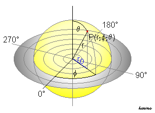
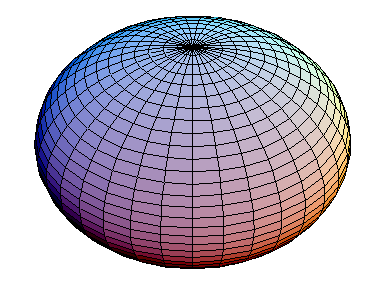
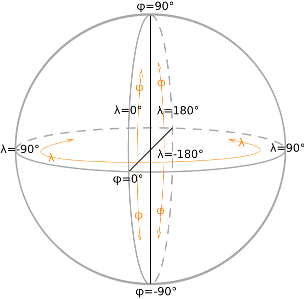

Breiten und Längengrade
Die vorangegangenen Beispiele zeigen wie mühsam und fehlerbehaftet die Orientierung an Objekten und ihren Namen ist. Sie zeigen auch, dass messbare, also geometrisch maßstäbliche, Referenzierungssysteme nicht notwendig geographisch lokalisierbar sein müssen. In der Kapitel Raumvorstellungen, Daten, Informationen war die abstrakte Definition vom Raum und seinen Objekten bis zur Repräsentation der geographischen Informationen in spezifischen Datenobjekten Thema. Nun gilt es diese beiden Konzepte zu vereinen.
Ein leistungsstarkes System, um Räume geographisch zu referenzieren, sollte unbedingt folgende Grundeigenschaften zusammenführen:
- Skalenunabhängige Identifikation jedes Punktes auf der Erdoberfläche
- Messbarkeit, also mathematische Berechnungsvorschriften für alle geometrischen Operationen
- Zuordnung aller beliebig skalierten Attribute (z.B. Name, Temperatur, Qualität )
Die Erde gleicht in erster grober Annäherung einer Kugel, daher liegt es nahe, die Punkte an der Oberfläche durch Kugelkoordinaten zu bestimmen. Da die Oberfläche einer Kugel bekannt ist, genügen zur Bestimmung eines Punkts die zwei Winkel für den Azimuth (geographische Länge) Lambda und den Zenit (geographische Breite ) Phi (Abb. 29).

Abbildung 29: Das Konzept der Kugelkoordinaten (Honina 2004)Überträgt man das Konzept der Kugelkoordinaten auf die Erde, so ergeben sich eine Reihe von Problemen. Das augenscheinlichste ist die Abplattung der Erde an den Polen, die durch die Erdrotation entsteht. Für die Bestimmung des Längengrads ist die Tatsache, dass die Erde ein Rotationsellipsoid mit großen und kleinen Halbachsen ist, unerheblich (Abb. 30).

Abbildung 30: Darstellung eines Rotationsellipsoid (AugPi 2006)Anders sieht dies für die Bestimmung der geographische Breite aus, da sich die Halbachsen der Erde um ca. 21,4 km unterscheiden. Abbildung 8 zeigt das Rotationsellipsoid der Erde mit Kreisform der Breitenkreise (in der Äquatorebene Radius der großen Halbachse A) und der Längenkreise (kleine Halbachse an den Polen ist B). Das resultierende Maß für die Exzentrizität von ca. 1:298 gibt die Abplattung der Erde und damit die Streckenverschiebung bei der Bestimmung sphärischer Koordinaten an. Die zentrale Problematik der exakten Bestimmung der Erdoberfläche (im Sinne einer gleichförmigen Oberfläche zur Berechnung der sphärischen Koordinaten) liegt nun in der Entscheidung begründet welches mathematische Repräsentation eines Ellipsoids als geeignetes Modell für das reale Rotationsellipsoid der Erde verwendet wird.

Abbildung 31: Die Bestimmung geographischer Koordinaten auf einem Rotationsellipsoid (Ttog 2006)Da es sich immer nur um eine Annäherung an die ideale Erdform bezogen auf eine bestimmte Erdregion handelt ist die Eignung des gewählten Ellipsoid als Referenz (Referenzellipsoid) von außerordentlicher Bedeutung zur Berechnung der Vermessungsnetze (Koordinatensysteme) und den daraus abgeleiteten Projektionssystemen (Abb. 31).
Welches Ellipsoid ist das Richtige?
In den vergangenen 2 Jahrhunderten wurden sehr unterschiedliche Referenzellipsoide entwickelt. Vor allem um regionale oder nationale Kartenwerke genauer ausführen zu können. Nun ist die Annäherung der Erdgestalt an die geometrische Figur eines Ellipsoids vergleichsweise einfach durchzuführen. Um eine möglichst genaue Position zu erhalten werden alle eingemessenen Punkte senkrecht auf das gewählte Referenzellipsoid projiziert. Bei einer kleinräumigen Betrachtungsweise ist die erreichbare Genauigkeit völlig ausreichend. Besuchen Sie die offizielle Online-Datenbank für Referenzellipsoide. Navigieren Sie zum EPSG Geodetic Parameter Dataset und suchen Sie nacheinander nach den Begriffen Bessel, Clarke, Krassowski und WGS84. Klicken Sie auf den View Link und vergleichen Sie die verfügbaren Parameter.
Bearbeiten Sie...
- Was sind Geographische Koordinaten?
- Was sind kartesische Koordinaten?